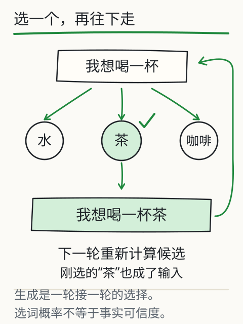
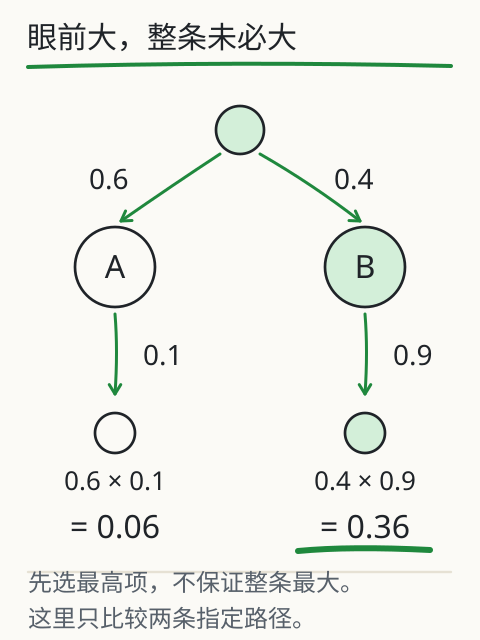

为什么同一句话能接出不同结果？
把一句话停在这里：“他端起杯子，喝了一口……”你接“水”，别人接“茶”，也有人想到“咖啡”。大家都能把句子接顺，可谁看见杯子里到底装了什么？


图先用“我想喝一杯”演示：选中“茶”，把它接回输入，再往下走。下面的实验用杯子那句话，让你自己抽几次，再回来判断模型到底知道了多少。
你猜会抽到哪一个？
先猜“水、茶、咖啡”里哪一个会被选中，再点“生成一步”。绿色条越长，抽到的机会越大，但最长的那一条不一定次次被抽到。
这些条来自一组课程设定的分数，转换后的概率总和为 100%。它们属于这个小教学模型，并非从聊天软件内部读出的真实分数。

把一句话接下去
先看候选，再生成一步。右侧百分比是当前这一步的计算结果。
还没生成。改温度会改变概率，点按钮才会选择。
候选片段、分数与可用上下文由课程设定，不代表任何商用模型的内部概率。
一个片段接上去，下一步就变了
假如第一步选中了“水”，先别忙着再点，看看候选栏。句子已经变成“他端起杯子，喝了一口水”，下一步要接的可能是句号或逗号。刚才的选择进入了前文，下一轮就得重新算。
继续点击，直到出现停止提示。停止符只负责通知程序结束，不写进正文；达到步数上限也会停。这里用有限状态表安排候选，让“选中→追加→再选择”看得见。真实模型在每一步还会运行向量、注意力和其他网络层。
这种把已生成 token 接回输入的做法，叫自回归生成。它解释了常见文本模型怎样继续往下写。屏幕上的字以什么速度出现，还受到网络传输和前端显示影响，不能只看打字动画就反推内部计算。
给冷门候选多一点机会
回到同一个句子位置，先调高温度，看原来较短的概率条有没有变长，再点“抽样 100 次”。调低温度，机会会向高分候选集中；调到零，这个程序直接选分数最高的候选。
这 100 次是在同一个路口反复抽取，不是让句子往前走 100 步，当前句子也不会改变。实际抽到的次数通常不会刚好等于理论比例：概率说的是机会，不是给这一小批结果排好的座次。
想重放刚才的过程，可以保持种子、温度和操作顺序相同。种子固定了这个本地程序的伪随机序列；在线服务还有别的影响因素，零温度也不必然保证逐字复现。
概率高，不等于事实已经核实
现在回到杯子。原句压根没说里面是什么，所以“水”赢了这次抽样，也没有让我们多看见一条事实。最高概率表达的是“这个模型在这段前文后更容易接出水”。杯里有没有水，得另找依据。
这也是“把温度调低就不会编了”不可靠的原因：温度能改变选择，却补不上缺失的地点、日期或出处。写故事时，多种续法可能正合需要；整理通知时，就得逐项回原文查。
整理通知时，先找依据
可以给整理活动安排的任务补上两句话：“材料没有写的标为未知。每项结果附对应原句。”如果答案很顺，原文却找不到那句话，先查材料。再抽一次或换个温度，都不能代替这一步。
下一步最可能，为什么不等于整段最好？
如果每一步都挑概率最大的，整段就一定最可能吗？先别急着回答。模型每次计算的是“已有输入之后，下一个片段各有多大概率”。两步连起来，要把第二步放在第一步之后再算：P(A,B|输入) = P(A|输入) × P(B|输入,A)。右边第二项里多出来的 A，正是刚才接回输入的片段。
沿图走两条指定的路。第一步 A 的概率是 0.6，B 是 0.4；随后，A 路上的某个片段概率为 0.1，B 路上的另一个片段为 0.9。走完整条路的概率分别是 0.6×0.1=0.06、0.4×0.9=0.36。只顾第一个路口，可能就错过后面概率更高的整条路径。


这是独立的人工两步例子，只比较图中指定的两条路径，没有画出完整搜索树。它说明“每步挑最大”不能保证整体最大，也不表示我们已经找到了总能给出最好答案的方法。
几种常见解码办法，就是在这个路口做不同选择。贪心解码每次挑最高项；采样按概率抽取；top-k 先留下若干高概率候选；top-p 先留下累计概率达到阈值的一组候选，再重新归一化抽样。它们决定怎么走，却不核验沿路写出的事实。长回答前面一旦写错，后面还可能顺着错误前缀继续写。
还有一种容易误认的终点：字写到上限，停了。生成可能因为停止标记、服务规定或长度上限而结束，停下不等于事情办完。应用应区分完整回答与截断回答；本地实验直接显示原因，真实接口要查看它返回的相应字段。
同题两次回答不同，也可以按这张路图排查：输入是否相同，模型版本和解码设置是否一致，工具有没有返回不同材料？本地种子能重放这份程序；真实服务还受到并行计算、版本和后端实现等因素影响。光看答案变了，很难断言是哪一步变了。
再深一层
候选的原始分数叫 logits。温度大于零时，这页先减去最大分数，再计算 exp((分数−最大分数)/温度)，最后除以总和。这是稳定 softmax 的做法，减最大值用于避免过大的指数运算。
exp(x) 表示 e 的 x 次方，e 约为 2.718。先把每个分数转换成正数，再各自除以这些正数的总和，就得到了加起来等于 1 的概率。第一次读时，可以先按“算正数，再分份额”理解这一步。
温度为零不能直接放进这个公式，因此代码单独使用最大分数规则。平分时按候选的固定顺序选择。真实服务是否允许这些设置、怎样实现解码，应以对应接口说明为准。